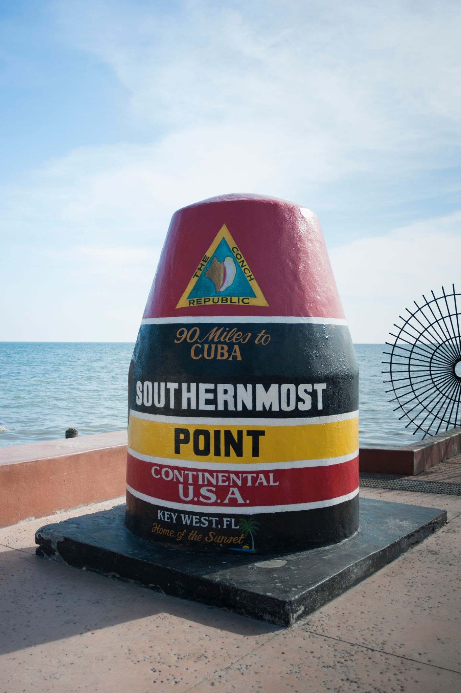
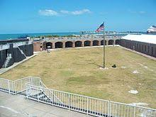
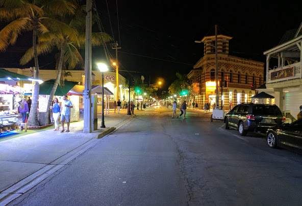
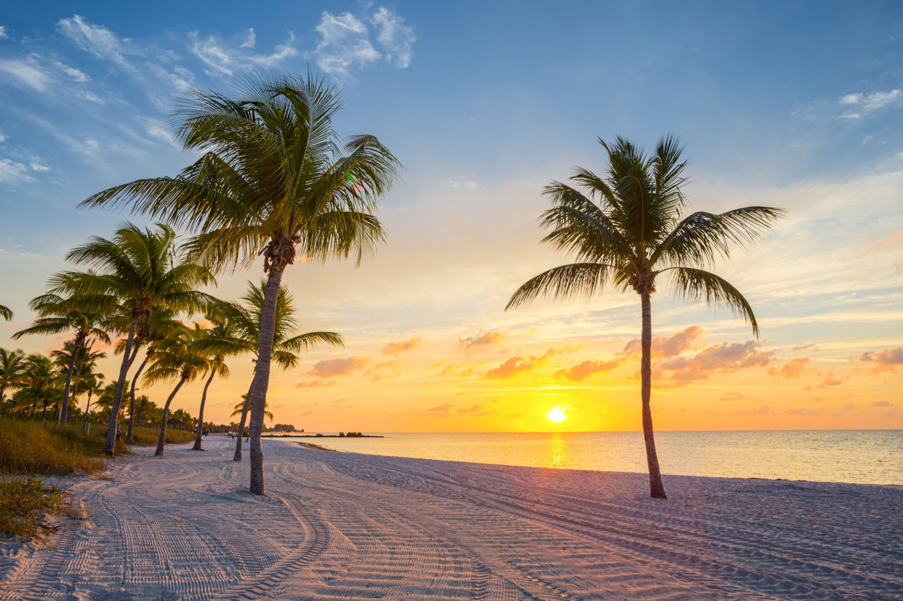
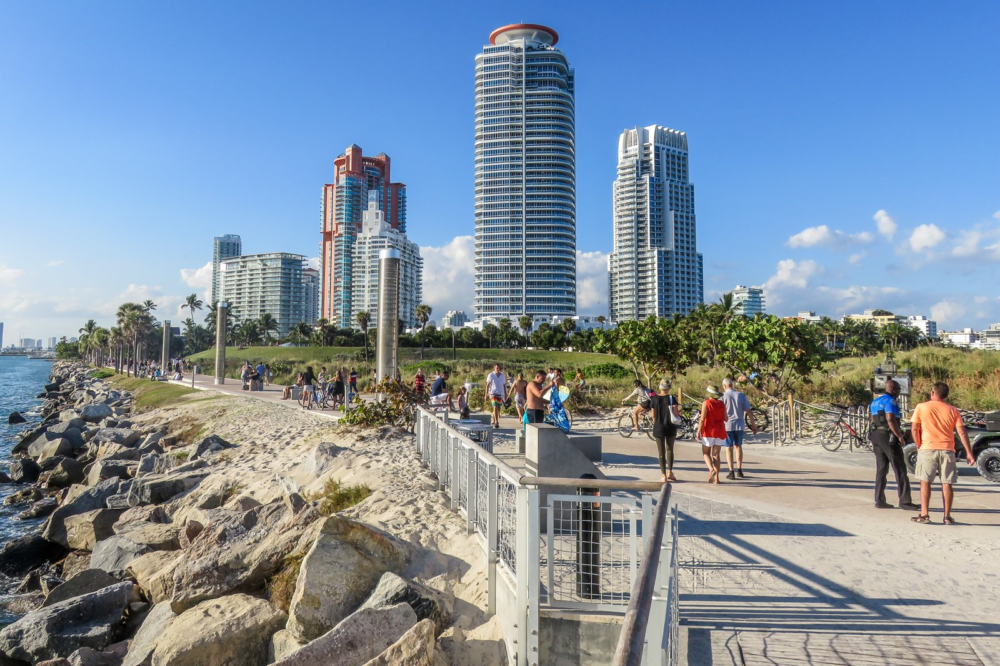

Lion Country Safari,West palm Beach.
 Safari,Lion country safari,West palm beach.
Safari,Lion country safari,West palm beach.
 Cabins,Lion Country safari.
Cabins,Lion Country safari.
This park has 2 parts ,4-mile drive-thru safari & cool walk-through amusement park. Features over 1,000 animals roaming inches from your car on more than 300 acres. Plus relaxing walk-through park featuring Animal Theater, petting zoo, bird feeding, pontoon boat tour, paddle boats, miniature golf, flying elephant ride, safari maze, giraffe feeding exhibit, water slides, splash water playground, restaurant, gift shops, picnic & more! KOA campground with complete RV, tent or cabin camping.
Southernmost Point,Keywest.

The Southernmost Point Buoy is an anchored concrete buoy in Key West,Florida.It is the southernmost point in the continental United States, the lowest latitude land of contiguous North American States. It is 18 feet above sea level.It is established as a tourist attraction in 1983 by the city at the corner of South Street and Whitehead Street.
Fort Zachary Taylor,Keywest.

The Fort Zachary Taylor Historic State Park, better known simply as Fort Taylor is a Florida State Park and National Historic Landmark centered on a Civil War-era fort located near the southern tip of Key West, Florida.
Duval Street,Keywest.

Duval Street is a downtown commercial zoned street in Key West, Florida, running north and south from the Gulf of Mexico to the Atlantic Ocean.
Smarthers Beach,Keywest.

Smathers Beach is the largest public beach in Key West, Florida, United States. It is approximately a half mile long. The beach is located on the south side of the island, along the Atlantic Ocean and State Road A1A, and begins at mile marker zero, the beginning of A1A. The beach is lined with coconut trees and is often crowded with tourists and locals alike.
South Point Park Port Miami Beach.

South Pointe Park has walking paths, a food stand, a lovely grassy area and tremendous 360 degree ocean views. It’s a local park as well as a beach.this park is famous for contemporary art sculptures, the sight of the cruise ships sailing past, and the clear water at this beautifully maintained park and beach area.